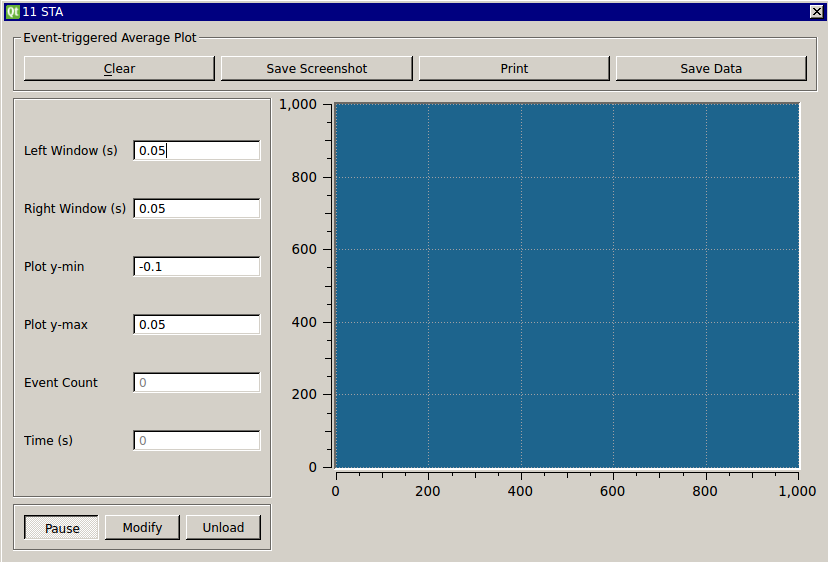

Requirements: Qwt, Spike Detector plugin, Plot helper classes (included), Boost libraries Limitations: None noted

This module computes an event or spike-triggered average of any input signal. You specify a time window of interest around the spike. This screenshot was made using a neuron model to generate spikes and the SpikeDetect module to detect spikes. The STA module then plots the average spike shape waveform is plotted.
To install the Boost libraries in Ubuntu:
$ sudo apt-get install libboost-dev
Here is an example of how you can compute the average spike waveform of the Connor-Stevens model neuron: